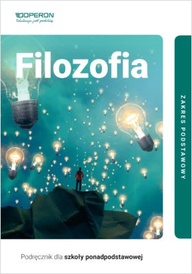

Dlaczego Filozofia?
7.10.2020 | 14:45:32 | Mikołaj Sypuła
Faktycznie to wybrałem filozofię, ponieważ od niedawdna zacząłem się nią interesować bardzo polubiłem o niej czytać i sprawiało mi to wiele radości. Jeżeli ty jesteś na tej stronie to przypuszczam że też interesujesz się filozofią. Ale dobra do rzeczy ~

Filozofia ogólnie pomaga ludziom wyciagać z depresji i innych chorób. Dodatkowo uczy nas życia ,życia w środowiku dzisiejszym czyli smrodu i śmieci, tak niestety wygląda nasza planeta co tu dużo mówić. Filozofia to jest coś pięknego, wyróżniającego się z innych dziedzin, jest ona naukowa ale co mam na myśli naukowa? mam na myśli to że uczy, uczy no ale czego? uczy miłości do drugiego człowieka i kontroli nad sobą. Naprzykład "Alan Watts: Potrzeba kontroli" Pisze o niej że mógłby przeżyć swój wybrany dowolny sen i przeżyć 75 lat w ramach 8 godzinnego snu (więcej informacji w zakładce Alan Watts). Więc dlatego wybrałem Filozofię.